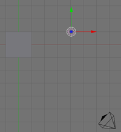
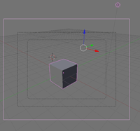
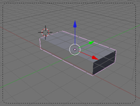
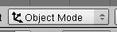
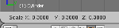
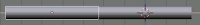
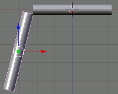
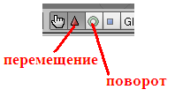

3D-моделирование в Blender. Курс для начинающих
Элективный курс по информатике "3D-моделирование в Blender" представляет собой начальный курс по компьютерной 3D-графике, дающий представление о базовых понятиях 3D-моделирования в специализированной для этих целей программе. В качестве программной среды выбран Blender (свободно распространяемая среда для создания трехмерной графики, анимации и другого). В данном курсе рассматриваются лишь азы работы в Blender: добавление объектов, их изменение, работа с материалом.
Место курса "3D-моделирование в Blender" в составе образовательной программы дополнительного образования детей "Лаборатория юного линуксоида" — четвертый год обучения.
Курс рассчитан примерно на 10-12 часов.
Виртуальность как способ изучения реального мира
Урок-лекция
1. Реальные и виртуальные миры
Что такое реальный мир? а виртуальный? где следует проложить границу между ними? Те объекты, которые мы видим вокруг себя: чашку, кота, монитор можно потрогать руками, изменить их. Значит они вполне реальны. Даже ветер вполне реальное явление, ведь его воздействие может изменять объекты. Но вот мы смотрим в монитор и видит там изображение человека, бегущего куда-то. Это изображение движется, подчиняясь нашим приказам, отдаваемым с клавиатуры, и мы в это время можем испытывать достаточно большой спектр эмоций и ощущений. Неужели то, что с нами происходит в компьютерных играх, - реальность? А может быть, определять объект в разряд «реальных» по признаку его ощутимости для человека неверно? Тогда что же следует признать критерием реального объекта?
Снова посмотрим на монитор. Бегущий там человек прыгает на крышу многоэтажного дома, дальше на соседнюю крышу... срывается... и бежит дальше. А теперь выглянем в окно. Часто мы такое можем увидеть? Человек, упавший с большой высоты без парашюта, вряд ли побежит дальше. Причина: деформация объекта (обычно необратимая) в следствие действия силы гравитации. Почему же в компьютерной игре на человека не подействовала гравитация? Ответ очевиден: так решил программист, создавший игру. В его власти было отменить физические законы в созданном им мире. Однако вряд ли он сможет отменить их за окном. Реальные объекты всегда подчиняются физическим законам. Программист создает лишь математические описания (представления) объектов и явлений реального или выдуманного им мира, но не сами объекты и явления. Такие представления и называют виртуальными объектами, т.к. они существуют лишь в памяти компьютера (вне памяти виртуальных объектов просто нет).
Несмотря на то, что виртуальные миры могут быть какими угодно и в них могут действовать любые (даже самые невероятные) «законы», наиболее качественными следует признавать те, которые похожи на реальность, подобны ей. Ещё бы... ведь с детства мы привыкли к тому, что огонь обжигает, резиновый мяч брошенный о стену отскакивает, перо и камень падают с разной скоростью и т.д. Если все это «воспроизвести» в виртуальном пространстве, то и человек «попавший» в это пространство будет чувствовать себя как в настоящем мире.
Конечно, подобие реальности не столь принципиально, если иметь ввиду лишь компьютерные игры. Однако подобие физическому миру имеет важное значение в изучении окружающей среды и прогнозировании. Представьте себе, что строится город в районе, где часто происходят ураганы. Дома какой прочности следует строить здесь? Как не просчитать и не сделать ошибку, ценой которой могут стать человеческие жизни? Возможно следует смоделировать дома, «заложив» их физические характеристики в компьютер. Затем, также смоделировать порыв ветра определенной силы и посмотреть его разрушающее воздействие на здания. Если виртуальный ураган разрушит виртуальные дома, ничего страшного, - можно просто поменять характеристики здания и наблюдать воздействие снова. Может оказаться так, что строить дома в выбранной местности экономически не выгодно. И лучше это знать заранее, чем построить, а через какое-то время придти к плачевному выводу. Становится очевидно: представление реальности с помощью компьютера может иметь вполне практическое значение.
2. Моделирование
Теперь поговорим о моделировании. В процессе моделирования создаются объекты-модели, цель которых заместить объект-оригинал при изучении. При этом модель должна содержать значимые для данного исследования (опыта) черты (свойства) оригинала, а незначительные для данного исследования можно опустить (игнорировать). В настоящее время широко применяется компьютерное моделирование, когда описание объекта или явления сохраняется в памяти компьютера, при этом используются специальные программы. Как и любое другое моделирование, компьютерное моделирование может быть различным. Например, математическим, когда какое либо явление или процесс описывается с помощью математических формул, а вести вычисления по ним без компьютера весьма сложно. Также следует выделить графическое моделирование, когда решается задача визуализации явления или процесса. Такое моделирование бывает необходимо, когда существует потребность в наглядном представлении явления из-за его сложности.
Отдельно следует выделить моделирование в реальном времени, при котором моделируемая система реагирует на воздействие из вне, другими словами – взаимодействует с объектами реального мира. Примером системы реального времени может служить игра (когда на действие пользователя в туже секунду наступает изменение поведения героя). Однако область применения моделирования в реальном времени намного шире и имеет важное практическое значение (телевидение, ядерная физика и др.).
3. Четырехмерное пространство и среды трехмерного моделирования
Известно декартово представление пространства как трех взаимно перпендикулярных осей (измерений): X, Y и Z. Это соответствует восприятию человеком длины, ширины и высоты объектов. Однако, помимо обладания этими характеристиками, объекты могут еще и изменяться. Изменение объектов происходит вдоль четвертого измерения – времени. Таким образом, мы получаем четырехмерное пространство, в нем и существуют реальные объекты.
Для того, чтобы смоделировать четырехмерное пространство на компьютере существуют среды трехмерного моделирования. Такая среда позволяет моделировать область пространства, наблюдать его из различных точек (изменять угол зрения), передвигать и изменять объекты. Во многих средах трехмерного моделирования можно не только создавать объекты, но и анимировать их (изменять их положение и свойства во времени).
Компьютерных программ, позволяющих создавать трехмерную графику достаточно много. Одной из них является Blender, изучению некоторых основ работы с которым посвящён данный курс. Blender, по-сравнению с другими средами трёхмерного моделирования, обладает двумя видимыми преимуществами. Во-первых он распространяется под лицензией GNU General Public License, что для конечного пользователя означает бесплатность его распространения и свободу копирования. Во вторых, в нем есть движок позволяющий создавать анимацию реального времени (интерактивные модели).
Вопросы и задания
- В чем заключаются отличия виртуального и реального объекта?
- Приведите примеры практической значимости создаваемых виртуальных пространств.
- Какова цель моделирования? Какие виды моделирования вы знаете?
- Какие виды компьютерного моделирования можно осуществить в средах трехмерной графики?
Дополнительная информация
- http://ru.wikipedia.org/wiki/Трёхмерная_графика
- http://ru.wikipedia.org/wiki/Виртуальная реальность
- http://ru.wikipedia.org/wiki/Реальное время
- Boralli, F. BsoD/Introduction to Physical Simulation. (http://wiki.blender.org/index.php/Main_Page)
- Азимов А. Популярная физика. От архимедова рычага до квантовой механики. - М.: ЗАО Центрполиграф, 2006. - 752 с.
Введение в Blender. Урок 2
Методическая разработка урока. Теоретическая часть
Blender – это пакет для создания трёхмерной компьютерной графики, анимации и интерактивных приложений.
1. Организация окна по умолчанию
Запустив Blender, вы увидите окно, состоящее из трёх дочерних окон: меню (а), окна 3D вида (б) и панели кнопок (в).
а

б

в
Это вариант по-умолчанию. На самом деле окон может быть больше, они могут располагаться по иному и иметь другие размеры. Однако пока оставим все как есть и сосредоточимся на окне 3D вида.
Теперь запомним следующую особенность: многие команды в Blender предпочтительно отдавать с клавиатуры. При этом следует помнить, что курсор мыши должен находиться именно в том дочернем окне, где планируется произвести изменения.
Рассматривая окно 3D вида, следует выделить в нем две «части»: меню (г) и непосредственно само окно вида.
г
2. Объекты сцены: куб, лампа и камера
В 3D окне можно наблюдать две пересекающиеся в центре линии (красную и зелёную) – оси координат (X и Y – их обозначения есть в нижнем левом углу 3D-окна), 3D-курсор (не путать с курсором мыши!), квадрат (на самом деле являющийся кубом), лампу и камеру (д).

д
Куб - это отображаемый объект. Возможно он вам не понадобится и тогда его следует удалить. Лампа служит источником света (без неё конечное изображение было бы чёрным), а камера необходима для отображения конечного изображения. С помощью камеры мы видим изображение под тем или иным углом. Все вместе (в данном случае, куб, лампа, камера) формируют сцену – представление события.
3. Рендеринг
Сцена, созданная в программе Blender – это далеко еще не изображение. Однако, зачастую такие программы как Blender используются для создания 3D-графики. Чтобы получить из сцены графический файл необходимо «отрендерить» файл.
Формирование изображения по созданной сцене называется рендерингом (отрисовкой). В Blender, чтобы посмотреть конечное изображение можно нажать F12. Отображаемая сторона, удалённость и др. на получившейся картинки зависят от того, где размещена и как повёрнута камера.
4. Навигация в окне просмотра с помощью клавиатуры
Если после запуска Blender вы нажмёте F12 и посмотрите на получившееся изображение, то, возможно, будете озадачены тем, что оно не совпадает с видом сцены (тем, что видим в 3D-окне). На самом деле все правильно, сцену вы видите сверху (так установлено по-умолчанию), а изображение получаете как вид из камеры (судя по всему камера "смотрит" сбоку).
Чтобы изменять вид в окне просмотра чаще всего используют клавиши NumPad (дополнительные цифры и знаки в правой части клавиатуры). Для того, чтобы установить в 3D-окне вид из камеры следует нажать 0 (ноль). Для возврата в вид сверху – 7.
Назначение других клавиш NumPad:
1 – вид спереди;
3 – вид справа;
2, 4, 6, 8 – поворот сцены;
5 – перспектива (повторное нажатие возвращает обратно);
«.» и Enter – изменение масштаба относительно выбранного объекта;
«+» и «-» - изменение масштаба сцены
5. Навигация в окне просмотра c помощью мыши
Изменять вид окна просмотра можно не только с помощью клавиатуры, но и используя мышь:
прокрутка колеса мыши меняет масштаб;
движение мыши при нажатом колесе поворачивает сцену;
движение мыши при нажатом колесе + Shift передвигает сцену.
Примечание: курсор мыши должен находиться в 3D-окне (а то передвинете что-нибудь другое).
6. Выделение объектов
Итак, первоначально на сцене присутствуют три объекта (куб, камера и лампа). Их можно передвигать, менять угол наклона и др., но для начала неплохо бы научиться выделять объекты (т.е. указывать компьютеру, с чем именно мы соизволим работать). Выделение объекта в Blender осуществляется щелчком правой кнопки мыши по нему. Контур выделенного объекта становится розовым (хотя не обязательно розовым — все зависит от выбранной темы).
Чтобы выделить несколько объектов, надо щёлкать по ним по очереди правой кнопкой мыши при зажатой клавише Shift.
Нажатие клавиши A приводит к сбрасыванию выделения с любых объектов (если что-нибудь было выделено), а следующее нажатие — к выделению всех объектов.
7. Изменение позиции, размера, и угла поворота объектов
Изменять местоположение, размер и разворот объектов можно как с помощью клавиатуры, так и с помощью кнопок, расположенных в меню 3D окна.
Например, чтобы изменить размер куба по всем осям с помощью клавиатуры необходимо выполнить следующую последовательность действий:
выделить куб, если он не выделен;
- 3 – вид справа;
- расположить курсор мыши в 3D-окне в соответствие со следующей закономерностью: чем ближе курсор к центру объекта, тем больше будет производить изменения малейшее движение мыши; чем дальше курсор от центра объекта, тем слабее будет влияние движения мыши.
- нажать клавишу S (не зажимать!);
- перемещать курсор мыши, пока объект не достигнет необходимого размера;
- щёлкнуть левой клавишей мыши, чтобы согласиться с изменениями, или правой – чтобы отказаться от них.
Если при перемещении курсора (п.4) зажать клавишу Ctrl, то любое изменение будет пошаговым (на определённую величину).
Для изменении местоположения объекта на сцене используется клавиша G, для поворота – R. К сведению, клавиши S, G и R не случайно выбраны для описанных действий: S – первая буква английского слова size (размер), G – go (движение), а R – rotation (вращение).
Если изменения необходимо выполнить только по одной оси, то следом после клавиши S или др. следует нажать X или Y или Z, в зависимости от того, по какой оси требуется изменить объект.
Кроме того, существуют специальные кнопки в меню 3D окна, включающие соответствующие режимы изменения объекта (е).
е
После включения любой из этих трёх кнопок у выделенного объекта появляются маркеры. Для внесения изменений следует навести курсор мышь на маркер, зажать левую кнопку и перемешать мышь.
8. Сохранение и открытие файлов
Сохранение и открытие файлов в Blender не сильно отличается от этих действий в других программах. Однако окна здесь выглядят достаточно специфично. Главное, что следует запомнить: в Blender при закрытии программы не выводится диалоговое окно с предложением сохранить файл. Поэтому об этом следует позаботиться заранее, иначе можно безвозвратно утратить только что созданное произведение.
Вопросы
- Какие задачи можно решать в программе Blender?
- Для чего предназначены клавиши 2, 4, 6 и 8 NumPad'а?
- Какая клавиша позволяет выделить всё или отменить выделение всего?
Ориентация в 3D-пространстве, перемещение и изменение объектов в Blender. Практическая работа. Урок 3
Инструкционная карта
| № | Задание | Способ выполнения | Иллюстрация |
|---|---|---|---|
| 1 | Сделайте окно 3D вида полноэкранным. | Shift + Space (пробел). При этом курсор должен находиться в окне 3D-вида. |
|
| 2 | Попробуйте перемещать 3D-курсор. | Щелчок левой клавишей мыши в любое место 3D-окна. | |
| 3 | Поочередно выделяйте камеру, лампу и куб. | Щелчок правой клавишей мыши по тому или иному объекту. |  |
| 4 | Выделите три объекта вместе (групповое выделение). | Щелчки правой клавишей мыши по кубу, камере и лампе при зажатой клавише Shift. |  |
| 5 | Измените тип окна на вид спереди, затем сбоку и, наконец, вид из камеры. | Нажатие на NumPad'е 1, затем 3 и 0. |  |
| 6 | Выделите один куб. | Щелчок правой кнопкой по объекту. | |
| 7 | Переместите куб по оси X на -2 единицы. | Зажав Ctrl, потянуть за красную ось назад (при этом наблюдать за изменением значения в нижнем левом углу 3D-окна). |
 |
| 8 | Переместите куб по оси Y на 3 единицы. | Потянуть за зеленую ось вправо. | |
| 9 | Переместите куб по оси Z на -1 единицу. | Потянуть за синюю ось вниз. | |
| 10 | Увеличьте куб по оси X в 3 раза. | Нажать S на клавиатуре, затем X. Зажать Ctrl и двигать мышью, добиваясь в нижнем левом углу 3D-окна значения в 3 целых. Примечание: чем ближе курсор мыши к объекту, тем сильнее влияет движение мыши на изменение объекта. |
|
| 11 | Увеличьте куб по оси Y в 1.3 раза. | S, затем Y. | |
| 12 | Уменьшите куб по оси Z в 2 раза. | S, затем Z. Тянуть до значения в 0.5. |  |
| 13 | Поверните брусок по оси X на -15 градусов | N. В появившемся плавающем окне в поле RotX ввести значение -15. Нажать Enter. | |
| 14 | Поверните брусок по оси Y на -10 градусов | В поле RotY ввести значение -10. Нажать Enter. | |
| 15 | Посмотрите получившееся изображение. | F12 | |
| 16 | Сохраните его, обратив внимание, что сохраняется не файл сцены с расширением .blend, а именно картинка (в формате JPEG). |
F3 |
Объекты в Blender. Урок 4
Методическая разработка урока. Теоретическая часть
1. Виды объектов
На прошлом уроке мы уже коснулись трёх объектов (куба, лампы и камеры), расположенных на сцене по умолчанию. Однако, обычно для трёхмерной сцены требуется куда больше разнообразных объектов. Основные объекты, такие как куб, сфера, плоскость, и многие другие, предусмотрены в Blender. По сути эти объекты являются примитивами, изменяя которые можно получать другие, более сложные объекты.
Если навести курсор мыши в 3D окно, а затем нажать пробел, то появится контекстное меню, содержащее список различных действий. Первый пункт в меню — Add (добавить) — содержит список объектов и подменю объектов, имеющихся в Blender.

Самый первый пункт — это так называемые меш-объекты (Mesh), куда входят плоскость (Plane), куб (Cub), окружность (Circle), сфера (UVsphere), геосфера (Icosphere), цилиндр (Cylinder), туба (Tube), конус (Cone), сетка (Grid) и голова обезьяны (Monkey) и другие. Данные объекты состоят как бы из «подобъектов» (более мелких элементов: вершин, ребер, граней), которые формируют конечный объект. Так геосфера отличается от сферы тем, что сформирована из треугольников, а не четырехугольников. Данные отличия имеют значение при дальнейшем редактировании объектов. В основном в последующих уроках мы будем использовать Mesh-объекты.

Помимо Mesh-объектов существуют и другие, среди которых уже знакомые нам лампа и камера.
2. Добавление объектов. Режимы объектный и редактирования
При добавлении нового объекта следует иметь ввиду, что он расположится там, где находится 3D курсор. Чтобы поменять положение 3D курсора, достаточно щелкнуть левой клавишей мыши в выбранном месте.
Для добавления нового объекта на сцену следует нажать пробел, выбрать пункт Add, далее - необходимый объект или вид объектов. Щелчок левой клавишей мыши по названию объекта добавит его на сцену. Однако добавлению большинства объектов предшествует появление диалогового окна, где можно изменить (или не изменять) параметры объекта.
Объекты добавляются на сцену в режиме редактирования. В частности, для Mesh-объектов это означает, что можно редактировать их составные части (вершины, ребра, грани), изменять их положение, размер, угол поворота (естественно два последних варианта для вершин не возможны). Чтобы из режима редактирования переключиться в объектный режим (когда любые изменения применяются ко всему объекту), следует нажать клавишу Tab. Повторное нажатие данной клавиши снова вернёт вас в режим редактирования.
3. Редактирование вершин, рёбер и граней
Изменение положения, размера и угла поворота объекта мы рассмотрели на прошлом уроке на примере куба. Теперь рассмотрим аналогичные изменения составных частей объекта. Очевидно, что такие изменения возможны лишь в режиме редактирования. Осуществляются они с помощью кнопок меню 3D окна или с помощью клавиш G, S, R.
После создания объекта у него выделены все части (в таком состоянии они подсвечены жёлтым цветом). Если снять выделение (клавиша A) и попытаться выделить какой-либо отдельно взятый элемент, то вы сможете выделять либо только вершины, либо рёбра, либо грани, в зависимости от того, какой режим включён в данным момент. Кнопки переключения данных режимов находятся в том же меню 3D окна, что и кнопки изменения положения, размера и поворота. После выделения требуемого элемента, его можно передвигать, а в случае рёбер и граней ещё и изменять размер и поворачивать.
4. Объединение объектов
Часто требуется объединить несколько объектов для последующих манипуляций с ними как единым целым. Для объединения объектов в Blender используется комбинация клавиш Ctrl + J. После этого появляется вопрос, требующий или подтвердить объединение (щёлкнуть по вопросу) или отказаться от него (убрать курсор мыши за пределы меню с вопросом). Однако, если вы добавляете объект, находясь в режиме редактирования другого объекта, то он автоматически будет объединён с последним. Поэтому, если вы не планируете объединять объекты, то не забудьте выйти из режима редактирования с помощью клавиши табуляции.
Объекты в Blender. Практическая работа "Молекула воды". Урок 5
Инструкционная карта
Версия Blender: 2.48.
| № | Задание | Способ выполнения | Иллюстрация |
|---|---|---|---|
| 1 | Запустив Blender, удалить куб. | X, затем Enter. Или Delete, затем Enter. |
|
| 2 | Добавить на сцену цилиндр. | Пробел. Выбрать: Add -> Mesh -> Cylinder. Окно "Add Cylinder": нажать "OK". |
|
| 3 | Удостоверьтесь, что вы находитесь в объектном режиме. |  | |
| 4 | Уменьшить цилиндр по всем осям до 0.3 от прежних размеров. | Нажать S, затем, зажав Ctrl, двигать мышью пока значения в левом ниженем углу 3D-окна не станут равны 0.3. Закрепить, щелкнув левой клавишей мыши. |
 |
| 5 | Вид спереди. | 1 на NumLock. | |
| 6 | Увеличить цилиндр по оси Z в 7.5 раза. | Нажать S, затем Z, и, зажав Ctrl, двигать мышью пока значения в левом нижнем углу 3D-окна не станет равно 7.5. Закрепить, щелкнув левой клавишей мыши. |
|
| 7 | Повернуть цилиндр на 90 градусов по оси Y. | Нажать R, затем Y, и, зажав Ctrl, двигать мышью пока значения в левом нижнем углу 3D-окна не станет равно 90. Закрепить, щелкнув левой клавишей мыши. |
|
| 8 | Продублировать цилиндр. Копию переместить по оси X так, чтобы два цилиндра касались друг друга | Дублирование: Shift + D. X, затем перемещение с помощью мыши. |
 |
| 9 | Поскольку в молекуле воды угол связи H-O-H равен 104.5 градусов, то следует развернуть второй цилиндр по оси Y на 75.5 градусов (180-104.5). |
R, затем Y | |
| 10 | Совместить концы цилиндров. | Перемещать с помощью мыши за красную и синюю стрелки-оси. |  |
| 11 | Разместить 3D-курсор в точке соединения двух цилиндров | Щелчек левой клавишей мыши | |
| 12 | Добавить сферу (которая будет служить моделью атома кислорода | Пробел. Выбрать: Add -> Mesh -> UVSphere. Окно "Add UV Sphere": нажать "OK".< |
|
| 13 | Два раза продублировать сферу, а дубликаты перенести на концы цилиндров. | Дублирование: Shift + D. Перемещение с помощью мыши. |
 |
| 14 | Уменьшить крайние шары до значения 0.8 от первоначального. | S. Перемещение мыши при зажатом Ctrl. | |
| 15 | Объединить все элементы модели. | Выделение группы элементов: поочередный щелчок правой кнопкой мыши при зажатой клавише Shift. Объединение: Ctrl + J. |
|
| 16 | Переключиться на вид из камеры | 0 на NumLock. | |
| 17 | Откорректировать размещение модели на сцене | С помощью инструментов перемещения и поворота |  |
| 18 | Сохранить файл. | F2 |
Объекты в Blender. Практическая работа "Капля". Урок 6
Инструкционная карта
Версия Blender: 2.48
| № | Задание | Способ выполнения | Иллюстрация |
|---|---|---|---|
| 1 | Запустив Blender, удалить куб. | X, затем Enter. Или Delete, затем Enter. |
|
| 2 | Добавить на сцену сферу. | Пробел. Выбрать: Add -> Mesh -> UVSphere. Окно "Add UV Sphere": нажать "OK". |
|
| 3 | Переключиться на вид спереди. | 1 на NumLock. | |
| 4 | Приблизить сферу. | Навести мышь на сферу и покрутить колесо мыши. | |
| 5 | Переключиться в режим редактирования. | Tab | |
| 6 | Сбросить выделение. | A | |
| 7 | Выделить самую верхнюю вершину сферы. | Щелчок правой кнопкой мыши по самой верхней точке сферы. |  |
| 8 | Включить прапорциональное редактирование переходов. | Нажать O (англ. буква "оу"). | |
| 9 | Переместить вершину вверх и, возможно, немного в сторону, предварительно отрегулировав количество передвигаемых вершин. | G - включение режима перемещения. Колесо мыши - регулировка охваченных вершин (видна окружность). |
|
| 10 | Слегка переместить вверх нижнюю вершину. | Аналогично п.7 и п.9 | |
| 11 | Переключиться в объектный режим | Tab | |
| 12 | Придать получившемуся объекту сглаженность. | Кнопка "Set Smooth" на панели редактирования (Editing). | |
| 13 | Переключиться на вид из камеры | 0 на NumLock. | |
| 14 | Сохранить файл. | F2 |
Экструдирование (выдавливание) в Blender. Урок 7
Разработка урока к элективному курсу "3D-моделирование в Blender"
В наборе любой среды 3D-моделирования имеется ограниченный набор объектов-шаблонов. Например, в Blender есть куб, сфера, цилиндра, конус и даже голова мартышки, однако нет пианино, стола … да можно сказать, вообще ничего нет, кроме ограниченной кучки примитивов. Так как же создаются все эти тела шреков, домов, добрых мстительных кроликов? Создаются они различными способами, одним из которых является изменение mesh-объектов. В свою очередь, для изменения mesh-объектов предусмотрено множество инструментов, одним из которых является инструмент Extrude.
Инструмент Extrude (в переводе с англ. - выдавливать, выпячивать и т.п.) позволяет изменять mesh-объекты в РЕЖИМЕ РЕДАКТИРОВАНИЯ за счет создания копий вершин, рёбер и граней и их последующего перемещения, а также изменения размеров (если это ребра или грани).
Рассмотрим как это можно сделать.
1. Итак, у нас имеется куб. Переключимся на вид из камеры (NumLock 0) и включим режим редактирования (Tab).
Как уже было сказано, экструдировать можно вершины, ребра и грани. Посмотрите на рисунок, чтобы не запутаться в понятиях.

Можно сказать, что вершина — это точка, ребро — прямая, а грань — плоскость. У куба 8 вершин, 12 ребер и 6 граней.
2. Как указать программе, что мы планируем экструдировать: вершины, ребра или грани? Необходимо включить соответствующий режим: редактирование вершин, либо ребер, либо граней. В каждом из этих режимов можно выделять лишь один тип подобъектов: например, в режиме редактирования ребер, можно выделять лишь ребра. Кнопки для переключения режимов находятся внизу 3D-окна.

3. Допустим, нам надо экструдировать вершину. Для этого следует включить соответствующий режим, выделить вершину и включить инструмент Extrude. Как же его включить? Есть специальная кнопка на панели Mesh Tools окна кнопок:
Но забудьте про нее. Пользоваться ей не очень удобно. Обычно, инструмент Extrude включают с помощью горячей клавиши E (англ. буква).
4. Выделив любую вершину куба и нажав E (курсор мыши должен быть в 3D-окне), подвигайте мышью. Вы увидите, что появилась новая вершина, местоположение которой можно отрегулировать с помощью мыши. После перемещения, необходимо закрепить изменения, щелкнув левой клавишей мыши (либо отменить, щелкнув правой). Однако появилась ни только новая вершина, но и еще одно ребро, связывающее эту вершину с исходной.

5. Теперь попробуем экструдировать ребро, при этом допустим, что нам необходимо ее выдавить точно по какой-либо оси, например, вверх (т.е по оси Z). Как вы могли заметить, когда выдавливали вершину, ее можно было перемещать по любой оси, и из-за этого точно сказать, где она находится, трудно. Чтобы выдавить подобъект точно по требуемому направлению, нужно после нажатия E выбрать ось, по которой будет перемещаться подобъект, с помощью клавиш X или Y или Z. Таким образом, чтобы выдавить ребро вверх нужно нажать E, затем Z. Кроме этого, если требуется выдавить на точную величину, можно зажать Ctrl при перемещении.
6. После того, как появилась новый подобъект, можно изменить его размер, а также повернуть.
7. Займемся гранями. Причем усложним задачу тем, что будем редактировать две грани сразу, например, противоположные. Для начала их нужно выделить (выделяем первую, зажимаем Shift, выделяем вторую). После этого нажимаем E и ... видим такое меню:

Предлагается выбор: либо выдавливать подобъекты как region (область), либо как individual faces (индивидуальные грани). В первом случае обе грани будут перемещаться в одном направлении вместе, во-втором случае - каждая по своей оси. Попробуйте оба варианта.
Посмотрите на изображение ниже. Оно было сделано из куба путем его превращения в брусок (прямоугольный параллелепипед) и последующего экструдирования граней. Размер новых граней был изменен, а также они были смещены.
Попробуйте сделать что-то подобное самостоятельно.
Подразделение (subdivide) в Blender. Урок 8
Разработка урока к элективному курсу "3D-моделирование в Blender"
Часто mesh-объект (куб, плоскость и др.) имеет недостаточное количество составных частей (вершин, ребер и граней) для создания из него более сложного объекта. Например, если решить из бруска сделать стол с помощью экструдирования, то становится очевидным, что недостаточно граней для выдавливания тех же ножек.
Однако в Blender есть специальный инструмент, позволяющий разделить грань или ребро на части. В итоге из одной части получается несколько или много более мелких частей. Так на рисунке ниже нижняя сторона бруска "разрезана" таким образом, что в итоге имеется 64 нижних граней.

Теперь из такого объекта легко получить модель стола (конечно "сырую", но все же похожую). Для этого достаточно выделить угловые грани на нижней части бруска и выдавить их с помощью инструмента Extrude.
Так как же в Blender разделить составные части mesh-объектов на более мелкие части? Пока понятно одно: делать это надо исключительно в РЕЖИМЕ РЕДАКТИРОВАНИЯ. Логично предположить, что сначала надо выделить подобъект, который предполагается делить. Разделять можно грани и ребра, следовательно их и надо выделять. Однако можно выделить две или более соседних вершины, — результат разделения в этом случае не будет отличаться от того, как если бы были выделены ребра между этими вершинами.
После выделения какой-либо части (или частей) mesh-объекта можно применять инструмент подразделения. Он называется Subdivide и доступен при нажатии клавиши W в режиме редактирования в 3D-окне.
Первым пунктом в контекстном меню является Subdivide (подразделить). Выбор данного пункта разделит выделенный объект путем добавления новой вершины в его центре. Так если выделена грань, то вместо нее образуется четыре новых грани. Если выделено ребро, то на его месте появятся два новых ребра.
Не снимая выделения, разделенную первоначально область можно делить множество раз с помощью Subdivide, добиваясь необходимого результата. Однако, если требуется подразделить область ни один и ни два раза, а больше, то лучше сразу выбрать инструмент Subdivide Multi. При его вызове появляется меню, в котором можно указать, сколько раз требуется подразделить выделенную область.
Еще одним пунктом меню, которое появляется при нажатии W, является пункт Subdivide Fractal. Это достаточно интересный инструмент: с его помощью можно одним разом ни только подразделить область, но и сместить новые вершины.

Последним пунктом, связанным с подразделением, является Suvdivide Smooth. Слово smooth с английского языка переводится как "гладкий", "ровный" и т.п. Создавая новые вершины, данный инструмент одновременно и смещает их, как и инструмент Subdivide Fractal, однако алгоритм смещения уже иной.
практическая работа
- Создайте модель стола из куба, используя при этом инструменты Subdivide и Extrude. Для этого предварительно сожмите куб по оси Z и измените произвольно размеры по осям X и Y (сделайте похожим на доску).
- Добавьте на сцену плоскость. Увеличьте ее в несколько раз. Примените к грани плоскости инструмент Subdivide Fractal с параметрами Number of cuts = 10 и Rand fac = 5. Затем, не снимая выделения, пару раз используйте Subdivide Smooth.
- Самостоятельно придумайте и создайте модель какого-нибудь объекта физического мира (кресла, чашки, кота, робота и т.п.). Используйте при этом инструменты подразделения и выдавливания.
Булевы операции в Blender. Урок 9
Разработка урока к элективному курсу "3D-моделирование в Blender"
В двух предыдущих уроках, чтобы получить доступ к инструментам выдавливания и подразделения, мы нажимали клавишу W в режиме редактирования. Если нажать эту клавишу в объектном режиме, то появляется совершенно другое меню с другими инструментами.

В Blender нажатие W в объектном режиме открывает доступ к так называемым булевым инструментам. Изменения объектов, производимые булевыми инструментами в компьютерной графике, основаны на логике булевых операций. Булевы операции, в свою очередь, - это подраздел математики; кроме того, булевы операции широко используются в программировании. Слово "булевы" заимствовано от фамилии Джоржа Буля, английского математика, труды которого лежат в основе математической логики.
Любая булева операция в компьютерной графике применяется к двум объектам. Ее результатом является третий объект, который представляет собой результат взаимодействия тем или иным способом двух исходный объектов.
В компьютерной графике (и Blender не исключение) широкое применение нашли следующие булевы способы взаимодействия объектов (соответственно им и называются булевы инструменты):
- Intersect (пересекать). Результатом является объект, образованный пересечением двух исходных объектов. Другими словами, третий объект формируют наложенные области двух исходных.
- Union (объединение). Результатом является объект, образованный объединением двух исходных объектов.
- Difference (разность). Результатом является объект, образованный вычитанием второго из первого, т.е. от первого объекта отрезается часть, которую перекрыл второй объект. Что из чего будет вычитаться, зависит от того, какой объект был выделен первым.
Практическая работа
1. Добавьте на сцену два любых объекта и выполните над ними операции объединения, разности и пересечения. Имейте ввиду, что объект-результат появляется на том же месте, что и исходные объекты.
2. Посмотрите на рисунок ниже. Из каких примитивов и с использованием каких булевых инструментов можно получить такие объекты в Blender? Создайте их.
3. На рисунке изображен прототип модели колбы.
Изготовьте подобную модель по предложенному ниже описанию и, затем, сохраните файл.
- Объединить конус и цилиндр.
- Полученный объект продублировать, дубль слегка уменьшить по осям X и Y.
- Из большего объекта вычесть меньший для получения полости внутри.
- В режиме редактирования выдавить верхние и нижние грани для создания плавного перехода.
Несколько граней вверху слегка выдавить для получения "носика" колбы.
Модификаторы в Blender. Mirror – зеркальное отображение. Урок 10
Разработка урока к элективному курсу "3D-моделирование в Blender"
Что такое модификаторы? Несмотря на "загадочное" слово, под модификаторами следует понимать всего лишь инструменты для изменения объектов. Можно провести аналогию с реальным миром: кирпичи и доски — это объекты, а молотки и стамески — это инструменты. В Blender существуют достаточно большое количество модификаторов. Наиболее очевидные из них объединены в выпадающий список на вкладке Modifiers панели кнопок Editing (F9). Влияние на объект каждого модификатора достаточно своеобразно. Некоторые, представленные здесь модификаторы, предполагают влияние одного объекта на другой, другие более простые. Мы не будем рассматривать все модификаторы, а остановим выбор на Mirror (зеркало), т. к. этот инструмент является наиболее востребованным в графическом моделировании.
Следует иметь ввиду, что отнести к модификаторам можно и ранее рассмотренные нами основные способы изменения объектов: это изменение положения (G), угла поворота (R), размера (S), экструдирование, подразделение, а также булевы операции. Ведь все эти инструменты так или иначе изменяют объект.
Модификатор Mirror дублирует объект таким образом, что создается зеркальное отображение. Чтобы понять почему Mirror является таким используемым, достаточно посмотреть вокруг: мир во многом состоит из достаточно симметричных объектов: левая часть часто является отражением правой. Моделируя симметричные объекты, проще создать одну половину, а затем скопировать и отразить копию. Именно копирование и отражение выполняет инструмент Mirror. Хотя можно обойтись и без него, но чаще с ним получается быстрее.
Данный инструмент не так прост, как может показаться вначале. Мир как минимум имеет три измерения: длину, ширину и высоту и соответствующие им оси X, Y и Z. При отражении по разным осям получаются совершенно разные результаты.
Помимо оси отражения (а точнее плоскости) важное значение имеет то, где находится центральная точка объекта. Отражение происходит относительно центральной точки. Когда объект только создан, то, скорее всего, его центральная точка находится в его центре. Представьте себе куб, центральная точка которого находится как раз в его центре. По какой бы оси вы его не отражали, отражение всегда совпадет с оригиналом. Но если переместить центральную точку на поверхность куба, то при отражении по соответствующей оси мы получим как бы два кубика, слитых воедино.
Для смещения центральной точки объекта можно воспользоваться кнопкой Center Cursor, расположенной на вкладке Mesh панели кнопок Editing (F9). Предварительно нужно выделить объект и с помощью 3D-курсора (он перемещается щелчком левой кнопки мыши в 3D-окне) указать желаемое положение центральной точки объекта.
Рассмотрим в действии инструмент Mirror на примере, моделирования гантели. Гантель это очень простой с точки зрения 3D-моделирования объект. Можно сказать, что гантель состоит из цилиндра и пары сфер. Ее легко смоделировать без применения каких-либо модификаторов. Однако, как мы это потом увидим, редактировать длину гантели будет удобнее, если изначально был применен инструмент Mirror. Итак приступим.
- Работать будем, переключившись на вид спереди (NumLock 1).
- Добавляем на сцену цилиндр и немного уменьшаем его по всем осям. Затем на глазок вытягиваем его по оси Z. При этом следует иметь ввиду, что это лишь половина гантели, поэтому сильно вытягивать не стоит.
- Добавляем на сцену сферу и, возможно, также уменьшаем ее по всем осям. Располагаем на верхней границе цилиндра таким образом, чтобы она слегка перекрывала верхнюю поверхность последнего.
- Далее объединяем сферу и цилиндр (Ctrl + J).
- После этого из списка Add Modifier вкладки Modifiers выбираем модификатор Mirror.
- Применив модификатор, мы не увидим результата. Дело в том, что отражение произошло по оси X. Однако нам надо — по Z. Следовательно в настройках модификатора следует выключить кнопку X и включить кнопку Z.

- После этого внизу появится зеркальное отражение верха. Однако и тут что-то не так: длина ручки не удвоилась. Вспомним, что отражение происходит относительно центральной точки объекта, а она у нас в центре цилиндра. Поэтому цилиндр-отражение совпал с цилиндром-оригиналом.
- Если переместить 3D-курсор чуть ниже центральной точки и нажать кнопку Center Cursor, то длина ручки увеличиться.
- Смещая центральную точку объекта, можно легко регулировать положение отражения. Если бы для моделирования гантели мы использовали просто цилиндр и пару сфер, то изменить длину гантели было бы сложнее.
- В конце можно переключиться на вид из камеры и повернуть объект, если требуется.

практическая работа
- Создайте модель гантели по предложенному выше описанию.
- Самостоятельно придумайте модель, для создания которой уместно использовать инструмент Mirror.
Сглаживание объектов в Blender. Урок 11
Разработка урока к элективному курсу "3D-моделирование в Blender"
Как вы могли заметить, mesh-объекты в Blender ни только в объектом режиме, но и на изображении (F12) не являются сглаженными: можно хорошо различить части, из которых они состоят. Для того, чтобы сгладить объект в Blender существует несколько способов. Один из них – это кнопка Set Smooth (установить сглаживание) на вкладке Link and Materials, находящейся на панели кнопок Editing (F9).

Нажатие на кнопку Set Smooth в объектном режиме приводит к сглаживанию всего объекта. В режиме редактирования можно сгладить только отдельные части объекта, предварительно выделив их. Работу данного инструмента можно хорошо увидеть на примере сферы.
Для того, чтобы преобразовать обратно сглаженный объект в рельефный, следует нажать на кнопку Set Solid, расположенную рядом с кнопкой Set Smooth.
Есть еще другой способ получения сглаженного объекта. В определенной степени он более гибкий. Это использование модификатора SubSurf.

Его действие основано в эффекте подразделения поверхности на более мелкие части. В примере ниже mesh-объекты Icosphere. К дальнему не был применен модификатор, к среднему был применен Subsurf с уровнем (level) 1, а к переднему — с уровнем 2.

Следует учитывать, что чем выше уровень, тем больше требуется ресурсов памяти для обработки изображения. Кроме того, если вы хотите получить такое же изображение, как в 3D-окне, то Levels и Render Levels в настройках модификатора Subsurf должны совпадать.
Практическая работа
- Разместите на сцене несколько различных mesh-объектов. Продублируйте их. К первым примените инструмент Set Smooth, а вторым — Subsurf.
- Если вы сохраняли blender-файлы на прошлых уроках, то откройте их и придайте моделям сглаженный вид.
Добавление материала. Свойства материала. Урок 12
Разработка урока к элективному курсу "3D-моделирование в Blender"
Модели, которые мы создавали до этого, имели серый цвет. Очевидно, что для серьезного моделирования создать лишь форму недостаточно, необходимо наделить ее соответствующими свойствами. Часто о свойствах объекта мы судим по его внешнему виду. Например, металлический отблеск на шаре сообщает нам, что он, вероятно, тяжелый. Поэтому одной из важнейших частей 3D-моделирования является применение к моделям материалов и их настройка.
Для добавления материала и настройки его свойств существуют кнопки материала (Material buttons) на панели кнопок Shading (F5).

В случае отсутствия у объекта материала данная панель будет содержать всего лишь одну кнопку: Add New, которую следует нажать для добавления материала.
Материал — это не только цвет объекта. Существуют множество других его свойств, например, прозрачность и отражающая способность, которые будут рассмотрены ниже. Однако сначала разберем как поменять цвет объекта.
По умолчанию материал имеет серый цвет. Изменить цвет можно двумя способами:
- нажать кнопку Col (color) на вкладке Material (по умолчанию она уже нажата) и, перемещая движки R (red), G (green) и B (blue), установить необходимый вам оттенок;
- нажать поле серого цвета с левой стороны от кнопки Col. После этого в появившейся панели выбрать на нижней полоске цвет, а в поле - оттенок.

Многие окружающие нас предметы и вещества обладают прозрачностью. Например, вода и стекло. Во многих графических программах есть свойство Альфа (Alpha), обозначающее прозрачность материала. Обычно значение, равное единице, означает полную непрозрачность материала. Приближение значения Alpha к нулю делает материал все более прозрачным. При нулевом значении объект становится невидимым. В Blender также существует свойство Alpha, однако есть небольшие отличия. На вкладке Material движок Alpha (A) позволяет уменьшать цвет материала (см. комментарий). А прозрачность включается на вкладке Mirror Transp с помощью кнопки Ray Transp (transparent – прозрачный) или на вкладке Links and Pipeline с помощью кнопки ZTransp. Поэтому, чтобы получить прозрачный объект в Blender нужно уменьшить значение A (с помощью движка) и нажать кнопку Ray Transp или ZTransp.
В Blender можно создать зеркальную поверхность, т.е. поверхность, обладающую отражающей способностью. Для этого на вкладке Mirror Transp следует нажать на кнопку Ray Mirror и, затем, передвинуть бегунок RayMir в большую сторону (чем больше будет значение, тем больше будет отражающая способность поверхности).

Настройка зеркальности и прозрачности — далеко не все возможности панели кнопок Shading (F9).
Практическая работа
Создайте в Blender сцену, в которой бы материалы объектов обладали свойствами прозрачности, могли отражать другие предметы, совмещали оба свойства.
Текстуры в Blender. Урок 13
Разработка урока к элективному курсу "3D-моделирование в Blender"
Проще текстуру можно определить как изображение, "накладываемое" на поверхность 3D-модели для создания эффекта определенных свойств материала (мрамора, дерева, металла и др.).
В Blender для добавления текстуры объекту следует перейти к группе кнопок Shading (F5) и подгруппе Texture Buttons. К модели можно применить несколько текстур (они располагаются как слои). Если слой занят текстурой, то на вкладке Texture в столбике слоев будет надпись "Tex". Далее в выпадающем списке Texture Type можно выбрать необходимую текстуру.
Обычно, просто добавить текстуру недостаточно. Ее необходимо настроить. Часть настроек находится здесь же (в подгруппе кнопок Texture Buttons), а другая в настройках материала (Material buttons). Рассмотрим пару примеров, как можно работать с текстурами.
Допустим, нам нужно получить подобие водной поверхности. Можно применить к плоскости текстуру Clouds (облака), но если посмотреть изображение (F12), то можно увидеть лишь поверхность с розовыми пятнами. Продолжать настройку текстуры следует в подгруппе Material buttons на вкладках Material и Map To.

Кнопка Nor позволяет включить рельефность. Степень рельефности определяется значением Nor, которое регулируется с помощью соответствующего движка.
Для получения чего-то древесного можно воспользоваться цилиндром и текстурой Wood. После добавления текстуры рядом появляется соответствующая ей вкладка (в данном случае Wood), где можно выполнить предварительные настройки.
Настроить цвет текстуры можно в подгруппе кнопок Material buttons.
Одной из часто используемых текстур является Image, которая позволяет накладывать на объект предварительно заготовленное изображение. После добавления данной текстуры на одноименной вкладке следует нажать кнопку Load и выбрать изображение. С помощью этой текстуры удобно получать кирпичную стену, пол с каким-либо покрытием и т.п. (т.е. объекты, состоящие из повторяющихся элементов). При этом рисуется лишь часть изображения, которая впоследствии с помощью настроек текстуры многократно дублируется по объекту.
Практическая работа
Добавьте на сцену несколько объектов. Примените к ним различные текстуры. Методом "научного тыка" изучите настройки, влияющие на вид текстур.
Материалы в Blender. Практическая работа. Урок 14
Разработка урока к элективному курсу "3D-моделирование в Blender"
Цель: на примере моделирования сцены стола для опытов научиться применять к объектам материалы и текстуры.
Инструкционная карта
Часть 1. Модель деревянного стола
- Откройте ранее сохраненную модель стола или создайте новую по плану практической работы урока 5.
- Выделите стол. Добавьте ему материал (если он будет отсутствовать), а затем — текстуру Wood (древесина).
- В кнопках текстур на вкладке Wood включите кнопки RingNoise (кольцевые помехи), Saw (пила), Soft noise (мягкий шум), увеличьте значение Turbulence (турбуленция) до 10.
- Снова вернитесь к кнопкам материала.
- Установите цвет материала (близкий к цвету древесины), затем установите цвет текстуры на вкладке Map To немного темнее или светлее первого.
Часть 2. Модель стеклянной посудины
- Откройте ранее сохраненную модель колбы или создайте новую колбу или пробирку по плану практической работы урока 9 (п. 3).
- В настройках материала объекта установите значение Alpha (A) в значение 0.2. Включите кнопку ZTransp или Ray Transp.
Часть 3. Модель зеркального стекла
- Разместите на сцене экструдированную плоскость или сплюснутый куб.
- Пусть объект обладает отражающей способностью (зеркальностью). Для этого нажмите кнопку Ray Mirror на вкладке Mirror Transp и установите одноименный движок в значение, например, 0.5.
- Установите также прозрачность (A = 0.5 и ZTransp). В итоге, у вас получится стеклянная поверхность, обладающая отражающим эффектом.
Часть 4. Исписанный лист бумаги
- Разместите на сцене плоскость.
- Установите для нее текстуру Image и загрузите изображение (предварительно подготовленное, с изображением текста).
- Войдите в режим редактирования плоскости и подразделите ее один или два раза (Tab ? W ? Subdivide).
- В кнопках материала на вкладке Map To найдите кнопку Disp и нажмите её. Затем на той же вкладке установите одноименный движок в значение 0.1. Это придаст плоскости "помятый" вид.
Создание объекта по точным размерам. Урок 15

Разработка урока к элективному курсу
"3D-моделирование в Blender"
Предположим, что нам дали задание нарисовать что-то вроде схемы-рисунка будущего строения, по которому строители должны будут сразу понять, что от них требуется. При этом важно отобразить на схеме пропорции строения. Например, заданы такие размеры реального здания:
- Длина — 7 м
- Ширина — 3 м
- Высота — 2.8 с одной стороны длины и 2.5 с другой стороны длины
- Дверь находится со стороны длиной стороны, у которой высота 2.8. Близко к краю.
- Окно находится на противоположной стороне от двери, со смещением на ширину двери.
- Внутри строение разделяет перегородка, отстоящая на 2 метра от короткой стены. Окно и дверь находятся в этой отгороженной маленькой комнате.
Вот что можно сделать в Blender:
- Разместим на сцене куб.
- Выделим его. Далее последовательно нажимаем S ? X ? 3. Тем самым устанавливается ширина, равная 3 единицам.
- S ? Y ? 7. Установка длины.
- Нажмите N. Появляется окно параметров объекта. В поле ScaleZ вводим значение 2.8. Нажимаем еще раз N, чтобы скрыть окно настроек.
- Поскольку высота с одной стороны должна быть меньше, чем с другой (крыша с наклоном), то переходим в режим редактирования нажатием Tab.
- Выделяем ребро, которое требуется опустить на 0.3 единицы. Нажимаем N. Уменьшаем Median Z с 1 до 0.7. Возвращаемся в объектный режим, закрываем окно параметров.

- Добавим на сцену другой куб. Сожмем его по оси X и увеличим по Z. Это будет дверь.
- Скопируем «дверь» (Shift+D) и уменьшим ее по оси Z. Получим окно.
- Вешаем дверь и окно на стены помещения.
- Продублируйте здание (без окна и двери). В режиме редактирования выделите одну меньшую грань и продублируйте ее. Остальные вершины удалите. Оставшуюся грань сместите на центральную точку. Выйдите из режима редактирования. После этого у вас должна получиться требуемая перегородка.
- Переключитесь в режим отображения Wireframe. Разместите перегородку внутри здания.

- Чтобы точно отмерить 2 единицы от стены, добавьте на сцену куб или цилиндр. Сильно уменьшите его, вызовите окно параметров (N), затем измените ScaleZ на 2, а RotX на 90. С помощью получившейся планки отмерьте 2 единицы, приложив к зданию, а затем подравняйте перегородку.
- Эскиз можно дополнить подписями, добавить к объекту материал и сделать его прозрачным.